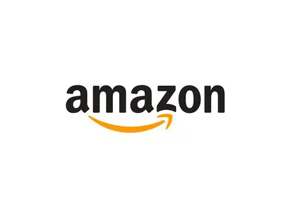
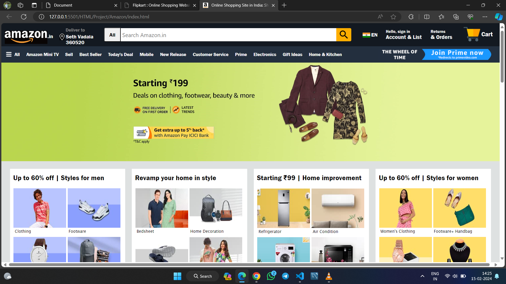

Amazon is the indias largest online shopping platform.
##Amazon: The Everything Store Amazon, founded by Jeff Bezos in 1994, began as a humble online bookstore operating out of a garage in Bellevue, Washington. Today, it has transformed into one of the world's most powerful and influential technology and e-commerce companies, touching nearly every aspect of modern life. ## From Books to Everything What started with books quickly expanded into electronics, clothing, groceries, furniture, and virtually every product imaginable. Amazon's customer-first philosophy — fast delivery, easy returns, and competitive pricing — earned the trust of millions worldwide. Today, Amazon hosts over **300 million active customer accounts** and millions of third-party sellers on its marketplace. ## The Power of AWS Behind the scenes, **Amazon Web Services (AWS)** became the company's greatest asset. Launched in 2006, AWS provides cloud computing services to businesses, governments, and startups globally. Companies like Netflix, Airbnb, and NASA rely on AWS. It contributes the **majority of Amazon's profits** despite being less visible to everyday consumers. ## Prime and Beyond Amazon Prime, launched in 2005, revolutionized online shopping with fast, free shipping. It has since grown into a full ecosystem offering streaming videos, music, gaming, and exclusive deals — boasting over **200 million subscribers** worldwide. ## Innovation and Expansion Amazon continues to push boundaries with innovations like **Alexa** (AI voice assistant), **Amazon Go** cashier-less stores, drone delivery trials, and electric delivery vans. Its acquisitions of Whole Foods, MGM Studios, and Twitch show its ambition to dominate multiple industries. ## A Global Giant With over **1.5 million employees**, operations in 20+ countries, and annual revenues exceeding **$638 billion**, Amazon is more than a company — it is a global infrastructure. Love it or critique it, Amazon has permanently reshaped how the world shops, works, and connects. -


Amazon, founded by Jeff Bezos in 1994, is one of the world's largest companies. It dominates e-commerce, cloud computing through AWS, and digital streaming via Prime. With over 1.5 million employees and $638 billion in annual revenue, Amazon has revolutionized how the world shops and uses technology.